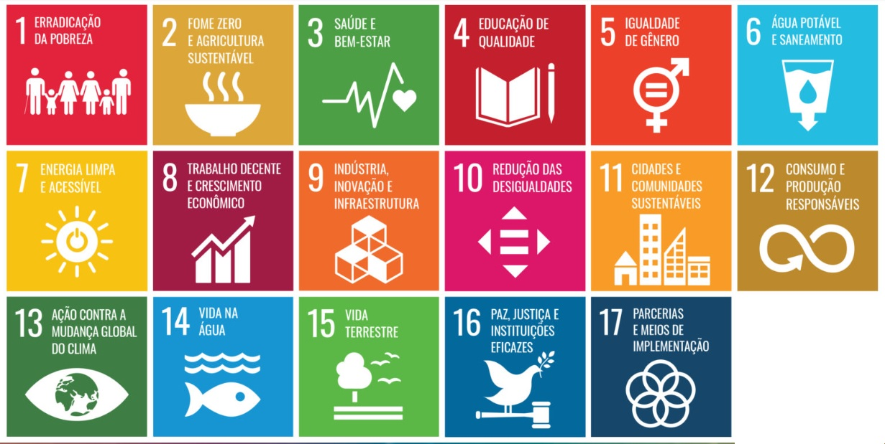

Os Objetivos de Desenvolvimento Sustentável (ODS) são uma agenda mundial adotada durante a Cúpula das Nações
Unidas sobre o Desenvolvimento
Sustentável em setembro de 2015, composta por 17 objetivos e 169 metas a serem atingidos até 2030.
Nesta agenda estão previstas ações mundiais nas áreas de erradicação da pobreza, segurança alimentar,
agricultura, saúde, educação, igualdade de gênero, redução das desigualdades, energia, água e saneamento,
padrões sustentáveis de produção e de consumo, mudança do clima, cidades sustentáveis, proteção e uso
sustentável dos oceanos e dos ecossistemas terrestres, crescimento econômico inclusivo, infraestrutura,
industrialização, entre outros.
Quais são os ODS?
- 01 Erradicação da pobreza: acabar com a pobreza em todas as suas formas, em todos os lugares.
- 02 Fome zero e agricultura sustentável: acabar com a fome, alcançar a segurança alimentar e melhoria
da nutrição e promover a agricultura sustentável.
- 03 Saúde e bem-estar: assegurar uma vida saudável e promover o bem-estar para todos, em todas as
idades.
- 04 Educação de qualidade: assegurar a educação inclusiva, e equitativa e de qualidade, e promover
oportunidades de aprendizagem ao longo da vida para todos.
- 05 Igualdade de gênero: alcançar a igualdade de gênero e empoderar todas as mulheres e meninas.
- 06 Água limpa e saneamento: garantir disponibilidade e manejo sustentável da água e saneamento
para todos.
- 07 Energia limpa e acessível: garantir acesso à energia barata, confiável, sustentável e renovável
para todos.
- 08 Trabalho decente e crescimento econômico promover o crescimento econômico sustentado, inclusivo e
sustentável, emprego pleno e produtivo, e trabalho decente para todos.
- 09 Inovação infraestrutura: construir infraestrutura resiliente, promover a industrialização inclusiva
e sustentável, e fomentar a inovação.
- 10 Redução das desigualdades: reduzir as desigualdades dentro dos países e entre eles.
- 11 Cidades e comunidades sustentáveis: tornar as cidades e os assentamentos humanos inclusivos, seguros,
resilientes e sustentáveis.
- 12 Consumo e produção responsáveis: assegurar padrões de produção e de consumo sustentáveis.
- 13 Ação contra a mudança global do clima:tomar medidas urgentes para combater a mudança climática e seus
impactos (*).
- 14 Vida na água: conservação e uso sustentável dos oceanos, dos mares, e dos recursos marinhos para o
desenvolvimento sustentável.
- 15 Vida terrestre: proteger, recuperar e promover o uso sustentável dos ecossistemas terrestres, gerir de
forma sustentável as florestas, combater a desertificação, deter e reverter a degradação da Terra e deter
a perda da biodiversidade.
- 16 Paz, justiça e instituições eficazes: promover sociedades pacíficas e inclusivas par ao desenvolvimento
sustentável, proporcionar o acesso à justiça para todos e construir instituições eficazes, responsáveis e
inclusivas em todos os níveis.
- 17 Parcerias e meios de implementação: fortalecer os meios de implementação e revitalizar a parceria
global para o desenvolvimento sustentável.
